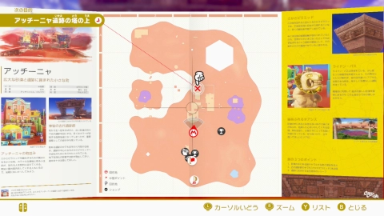
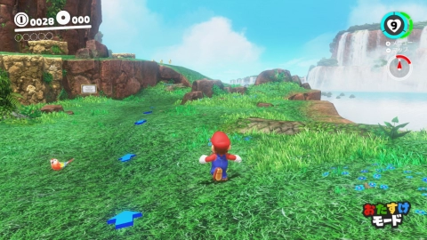
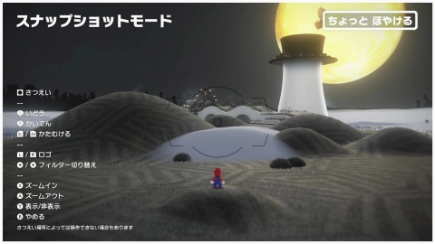

アクションガイド


マリオ
キャッピー


視点のリセット
みまわす

帽子を投げる
しゃがむ


または
マップ
はしる
ジャンプ


または
または
いどうとびだす / もどる
または
ポーズメニュー
「２人でプレイ」を選んで
マリオとキャッピーで協力プレイ!
マリオとキャッピーで協力プレイ!

１人でプレイ
２人でプレイ
マリオ
マリオ + キャッピー


Proコントローラーでも、Joy-Conとほぼ同じ操作ができます。


どのコントローラーの組み合わせでも、２人プレイができます。


走り幅跳び
走りながら


転がる

または
を押しながら をふる
をふる
ヒップドロップ
空中で
ボディアタック
空中で落下中に
ヒップドロップジャンプ
空中で
キャプチャー
または
をふる(でキャプチャーをやめる)
上投げ
を上にふる
下投げ
を下にふる
回転投げ
を横にふる
帽子投げホールド
長押し
帽子踏みジャンプ
ホールド中の帽子に近づく帽子投げホーミング
を連続でふる
バック宙
横宙返り
走りながら背中方向に
３段跳び
タイミングよく
壁キック
壁にくっついて
持つ/投げる
または
をふる
泳ぐ
平泳ぎ
スピン
 まわす
まわす
ダッシュ

土管に はいる
土管の上で
ライドン・バス
ブレーキおりる
バイク
アクセルジャンプおりる


カエル
ダッシュジャンプをふると ハイジャンプ
パタクリボー
とぶをふると はやくとぶ
ワンワン
引いてはなすとふっとぶ
ティラノサウルス
ダッシュこうげきをふっても こうげきができます
望遠鏡
 みまわすズーム
みまわすズーム でも みまわせます
でも みまわせます リセット
リセット
キラー
長押しで加速をふると もっと加速
ミルゾウ
メガネをかける/はずす
クリボー
ダッシュジャンプをふると ハイジャンプ
カックー
長押しで滑空
ジュゲム
釣り糸をたらす/あげる
プクプク
もぐるあがるをふると こうげきができます
セノビ―
長押しでのびるをふると もっとのびる
ファイアブロス
投げるジャンプをふると もっと投げる
タンクロー
ねらう撃つでも ねらえますリセット
シマハナチャン
のびるをふると はやくのびる
ビューゴー
長押しで吹くをふると もっと吹く
ボウル人レーサー
ジャンプをふっても ジャンプができます
ホースイ
長押しですすむ長押しであがるをふると まきちらす
バブル
ダッシュジャンプをふると もっとダッシュ
ハンマーブロス
投げるジャンプをふると もっと投げる
ツックン
突く/はなれるはじくジャンプ
ブル
長押ししてはなすとタックル
クッパ
パンチジャンプをふると ファイア
ヨッシー
舌をのばす長押しでふんばりをふっても 舌をのばせます





旅の途中で を押すと
を押すと 現在地や
現在地や 行き先がわかるマップが開きます。マップの上で
行き先がわかるマップが開きます。マップの上で を動かして
を動かして
 中間ポイントを選ぶと、その場所まですぐに移動できます。さらに、マップを開いたまま
中間ポイントを選ぶと、その場所まですぐに移動できます。さらに、マップを開いたまま を押すと、
を押すと、
パワームーンリストやキャプチャーリストなどのリストも確認できます。
を押すと現在地や行き先がわかるマップが開きます。マップの上でを動かして中間ポイントを選ぶと、その場所まですぐに移動できます。さらに、マップを開いたままを押すと、パワームーンリストやキャプチャーリストなどのリストも確認できます。

 を押してポーズメニュー「オプション」の「モード選択」から「おたすけモード」が選べます。
を押してポーズメニュー「オプション」の「モード選択」から「おたすけモード」が選べます。お子さまやゲームに慣れていない方にぴったりの、ライフが多いモードです。行き先を示す矢印があったり
落ちてももどって来られるなど、便利な機能が旅をサポートします。 立ち止まると、ライフも回復しますよ。
 モード選択する
モード選択する

すべてのamiibo で、amiiboおじさんから、パワームーンのヒントをもらうことができます。 ステキな衣装をもらえる amiiboもありますので、ぜひ話しかけてみてください。

amiiboおじさん
 Joy-Con(R)
Joy-Con(R)

 Proコントローラー
Proコントローラー
マリオ・ピーチ・クッパのamiiboをお持ちでしたら、旅の途中で を押しながらコントローラーのNFCエリアに
を押しながらコントローラーのNFCエリアに
amiiboをタッチしてみてください。その他のamiiboでも、少しだけ良いことが起こりますよ。
マリオのamiibo : 一定時間無敵になり、ダメージを受けることがなくなります。
ピーチのamiibo : ライフUPハートがもらえます。
クッパのamiibo : ローカルコインの位置を表示します。カメラを回して、探してみてください。
を押しながらコントローラーのNFCエリアにamiiboをタッチしてみてください。その他のamiiboでも、少しだけ良いことが起こりますよ。
マリオのamiibo : 一定時間無敵になり、ダメージを受けることがなくなります。
ピーチのamiibo : ライフUPハートがもらえます。
クッパのamiibo : ローカルコインの位置を表示します。カメラを回して、探してみてください。

インターネットに接続してから、ランキングボードに話しかけてみてください。 いろいろな遊びのスコアやタイムのランキングを確認することができます。 フレンドや世界中の人達と、さらなる記録にチャレンジしてみてはいかがでしょうか。

旅の途中で を押すと、ゲーム画面を撮影する準備ができます。 カメラを動かしたり、フィルターをかけたり
を押すと、ゲーム画面を撮影する準備ができます。 カメラを動かしたり、フィルターをかけたり
あなただけの１枚を記録してみましょう。 準備ができたら を押すだけで撮影されて、本体のアルバム
を押すだけで撮影されて、本体のアルバム に
に
保存されます。
を押すと、ゲーム画面を撮影する準備ができます。 カメラを動かしたり、フィルターをかけたりあなただけの１枚を記録してみましょう。 準備ができたら
を押すだけで撮影されて、本体のアルバムに保存されます。